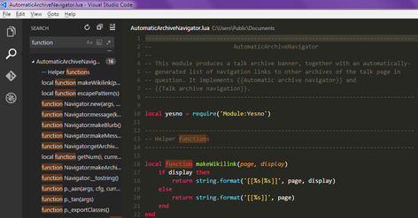

Description
Microsoft Visual Studio est une suite de logiciels de développement pour Windows et mac OS conçue par Microsoft.
Visual Studio est un ensemble complet d'outils de développement permettant de générer des applications web ASP.NET, des services web XML, des applications bureautiques et des applications mobiles. Visual Basic, Visual C++, Visual C# utilisent tous le même environnement de développement intégré (IDE), qui leur permet de partager des outils et facilite la création de solutions faisant appel à plusieurs langages. Par ailleurs, ces langages permettent de mieux tirer parti des fonctionnalités du framework .NET, qui fournit un accès à des technologies clés simplifiant le développement d'applications web ASP et de services web XML grâce à Visual Web Developer.
Avantages et inconvénients
Ce qui fait réellement sa force est donc cette capacité à prendre en charge de nombreux langages mais aussi d'apporter de nombreuses fonctionnalités pratiques qui faciliteront la création de code pour les développeurs.
Il est possible d'installer des extensions pour obtenir des fonctionnalités supplémentaires.
Le principal inconvénient de ce logiciel est qu'il était uniquement compatible avec Windows. Mais depuis 2016, le logiciel est également disponible sous Mac.
Ce logiciel est payant (inclus dans le pack Windows Professionnal).
L'avis de la rédac'
Un logiciel complet et performant, utile si on utilise d'autres logiciels de la suite Windows.Comment l'obtenir ?
Vous pouvez le télécharger ici.
Il est utilisable gratuitement pour les étudiants.
Pour les autres usagers, vous pouvez le tester librement pendant une période d'évaluation. Il sera ensuite nécessaire d'acheter une licence (Windows Professionnal).